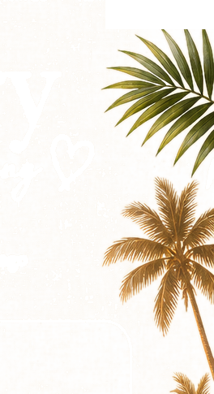
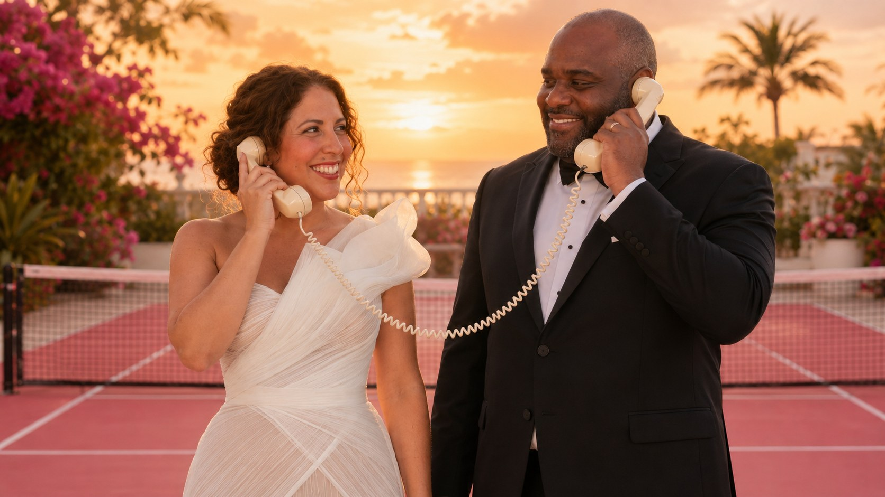

Browse our most common questions — or ask your own, we're happy to help!
🛳️ Cruise FAQ
Can I invite my family, friend, or frenemy?
Absolutely! We'd love for your people to take advantage of the negotiated cruise rate too. Invite your mom to help with the kids, tell someone you have been dying to take a vacation with, or convince your favorite friend (or frenemy) that they suddenly need a Caribbean vacation.
A note that because our wedding events have limited capacity, though, only guests specifically invited to the wedding will be able to attend wedding-related events.
How do I book my cabin?
Use the Booking Link on the Travel page — cabins are reserved through our travel advisor, Aligned Journeys, who will walk you through everything.
Can I book anywhere?
For wedding groups Royal Caribbean requires that the guests centrally book through an advisor so that all wedding related activities and events can be organized and tracked. They are allocating specific staff to support the events and they need to keep track of who will be attending in order to ensure everything runs smoothly. Booking must be done through Aligned Journeys. Book with Aligned Journeys ↗
How many times do I need to fill out the travel form?
One travel form individually completed in full for each traveler that will be in your room.
What's included in our cruise fare?
Accommodations, meals, entertainment, pools and whirlpools, Broadway, ice skating, and AquaTheater shows, kids and teens programs, and the fitness center. Not included: specialty dining, spa services, alcohol, shore excursions, and internet.
What is the payment schedule?
A $250 per-person deposit secures your cabin, and final payment is due 10/12/2026.
Can I book without a deposit?
A deposit is required to secure your cabin — but watch for Royal Caribbean's reduced-deposit promotions; our advisor will apply any that are running.
Are payments refundable?
Payment and cancellation terms follow the cruise line and Aligned Journeys booking agreement — exact terms are shown during booking and may vary by fare type.
Can I upgrade my room later?
Upgrades depend on availability and current pricing — contact Aligned Journeys and they'll find you options.
Can I book excursions through you?
Excursions are purchased through Royal Caribbean once your reservation is connected to your cruise account.
Do kids sail free?
Kids Sail Free and other promotions may apply depending on dates and eligibility — your advisor will apply the best eligible offer.
What time on the 28th does the cruise return?
The ship is planned to dock at 6 AM, and disembarking for all passengers normally takes a few hours.
Ⓑ Bingo FAQ
I hate games — do I have to play?
Wesley: No, of course not. Who wants to share personal information with people?
Julia: Absolutely everyone plays.
So pick whoever's answer resonates with you most to follow. 😄
When does the game start?
The game goes live once we set sail! Play anytime during the cruise — matches update in real time on the leaderboard.
How do I submit my fact?
Your fun fact IS your entry — share it in the "Your Bingo Clue" box when you RSVP. One surprising or funny fact about yourself is all it takes.
Can I change my answer?
Yes — you can change a guess any time before it's checked. Wrong guesses are part of the fun, so keep meeting people and keep playing!
What if I can't find someone?
Ask around! Every fact is a conversation starter. Introduce yourself, ask questions, and don't give your own fact away too easily — that's the whole game.
How are points calculated?
Every correct match earns points, and the more you match, the higher you climb the leaderboard. 100% virtual, no paper — and bragging rights are everything.
🪩 White Party FAQ
What time is the White Party?
7:00 PM on sail-away night — Saturday, January 23. Board, settle in, and come celebrate!
Where is it located on the ship?
On board Harmony of the Seas — the exact venue will be shared closer to sailing and in the daily cruise planner.
Is there a theme or dress code?
Yes — wear white! Crisp, breezy, all-white everything. Linen, lace, sparkle... as long as it's white, you're perfect.
Will there be food and drinks?
Absolutely. Dinner is included on the ship that evening, and a welcome drink will be provided.
Anything else we should know?
Comfortable shoes! It's night one of five — pace yourselves, champions.
🏓 Pickleball FAQ
When is the tournament?
First round is Sunday, January 24 at 8:00 PM. Championship night is Tuesday, January 26 at 8:00 PM — only the winners move on!
Do I need a partner to play?
Nope — register with just your name on the Pickleball page and we'll pair you up. You'll leave the court with new friends, guaranteed.
Do I need to bring a paddle?
Paddles and balls are provided on the court, but you're welcome to bring your own special paddle.
Can beginners play?
Absolutely. This is a just-for-fun tournament — first-timers are more than welcome, and we'll go over the basics before the first round.
Can I switch partners?
Teams lock in when the bracket is announced on tournament night, but you can switch any time before then — just let Julia and Wes know.
What happens if it rains?
We play on! If weather closes the court, matches move to later in the cruise — the bracket travels with us.
How do I sign up?
On the Pickleball page — fill in the Register as a Team form (one name is enough).
💬 Popular Guest FAQ
We'll post and share questions that are being commonly asked — so please check back! Submitted questions will also be answered individually.
⚓ Ask Your Own Question ⚓
We're here to help! Send us anything on your mind.
Sunrise skies. Pickleball vibes. Unforgettable memories.
We can't wait to celebrate this adventure with you. — Julia & Wesley · January 26, 2027